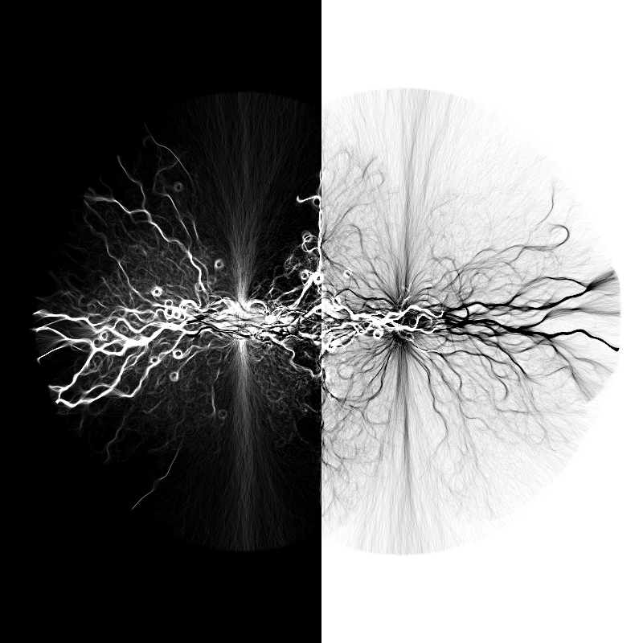
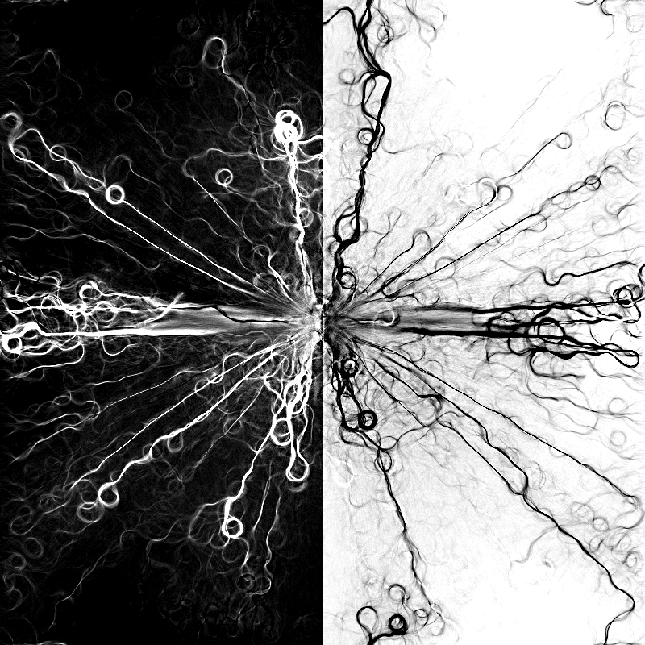
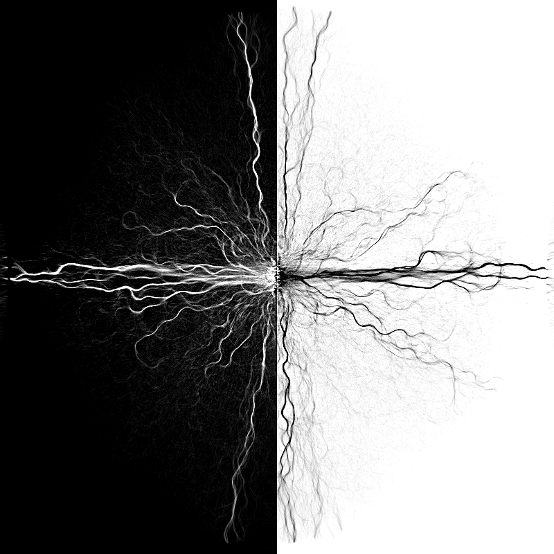
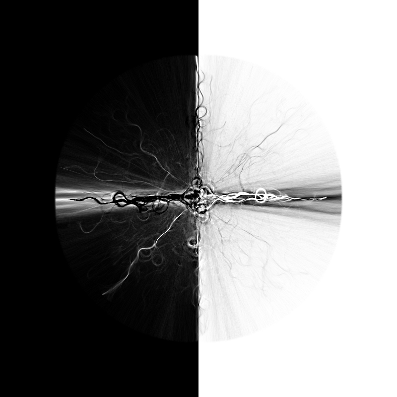
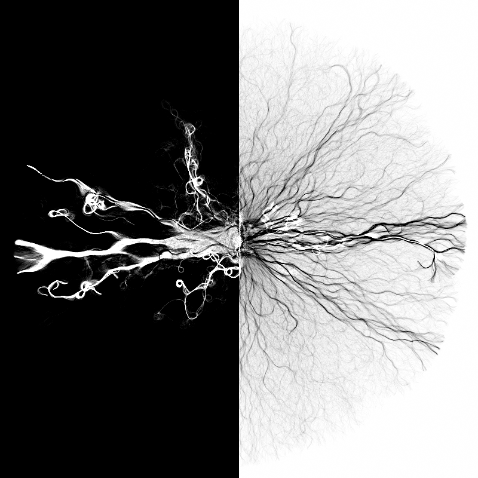
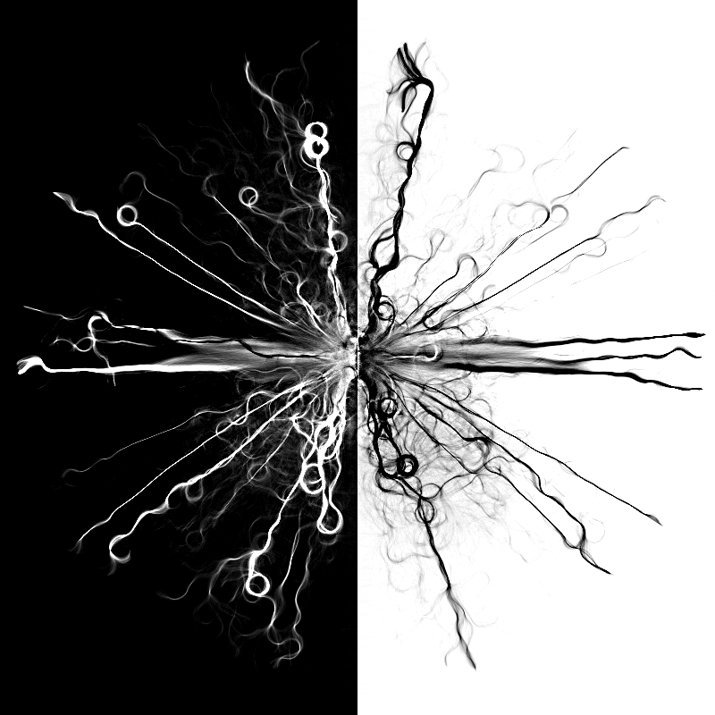

Procedural Ink

Overview
This program creates interesting abstract patterns. It works by using particles and a grid. The particles' movements are affected by the grid but the particles also modify the grid. This creates feedback loops and complex behaviour from relatively simple rules.
Inspiration
This was originally created as a test for modeling river formation. The program started to take on a life of its own though. At some point I found the patterns that the program was generating to be more interesting than the rivers I was originally aiming to create and so I just went with it and thus this program was born.
Results
Below are a few examples of patterns generated by the program.
    